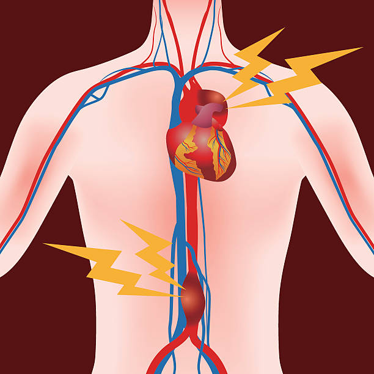

Thoracic aortic aneurysms are a type of thoraco-abdominal aneurysms and are relatively uncommon compared to abdominal aortic aneurysms
Types of Aneurysm
Thoracic Aorta
Aneurysm
Also known as thoracic aneurysm. Thoracic aortic aneurysm is a weakened area in the body’s main artery, the aorta. In this case, the weakened aortic wall is widened.
Thoracic Aneurysm Symptoms
In this type of aneurysm occurs gradually without notice, making predictions difficult. The growth varies from small to bigger, and some remain small. These following are the known signs and symptoms of thoracic aortic aneurysm.